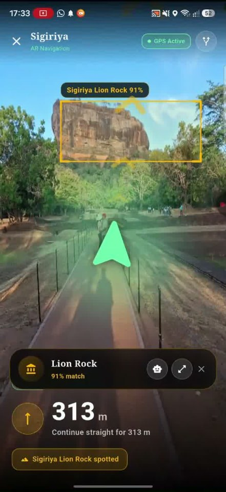
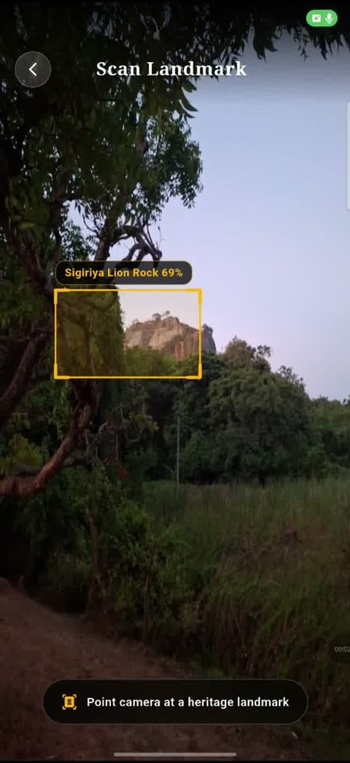
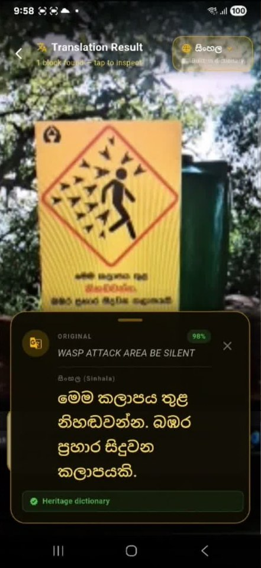
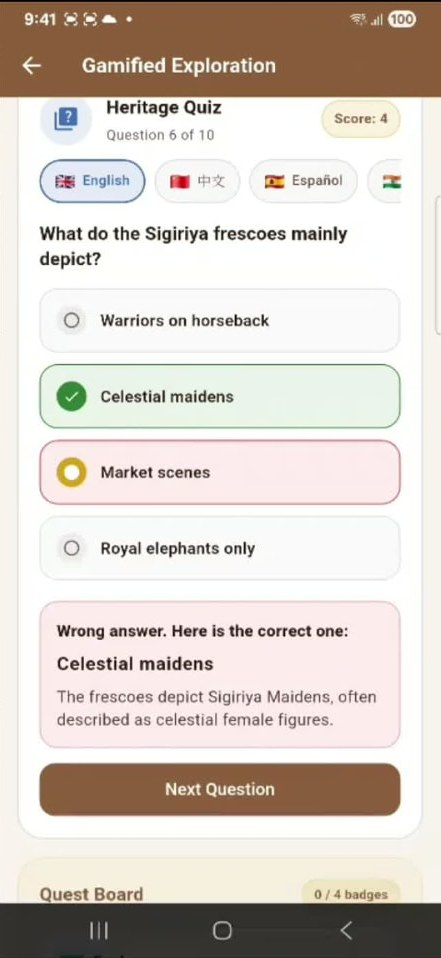
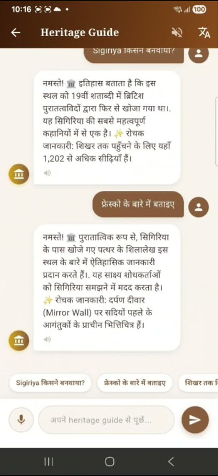
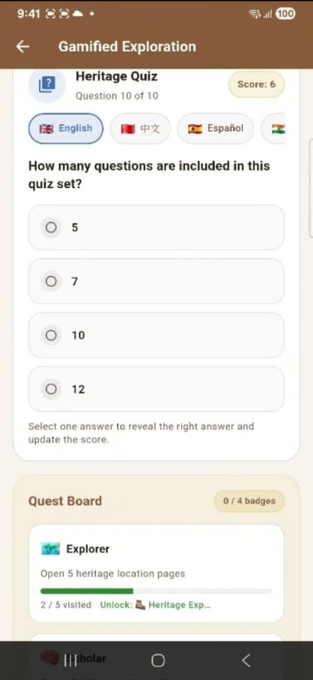

No signal where it matters
Sigiriya, Dambulla, Anuradhapura and Polonnaruwa have weak coverage, so online apps and cloud AI fail on site.
HeritageAR is an offline augmented-reality guide. Point your phone at a landmark, see its story on screen, ask questions and get guided to the next spot — all running on your phone.
Coming to Google Play & App Store · January 2027


Sri Lanka's most visited heritage sites are exactly where today's travel tools stop working.
Sigiriya, Dambulla, Anuradhapura and Polonnaruwa have weak coverage, so online apps and cloud AI fail on site.
Information boards carry brief, fixed text in limited languages — the real stories stay hidden.
Licensed guides add cost per group, aren't always available and can't cover every language.
GPS can't reliably guide you between closely spaced structures inside a large site.
Four functions that usually need four apps and a good connection — combined into one offline experience.
01 · See
Open the scanner and point at any structure. The camera works on the phone — nothing is uploaded.

02 · Recognise
A compact YOLOv8n model spots individual landmarks — like Lion Rock — and shows its confidence.

03 · Understand
The offline heritage guide answers by text or voice from a verified heritage knowledge base.
04 · Navigate
Step counting, compass heading and landmark checks guide you where GPS alone is not accurate.
Every screen below is from our working prototype, tested on site at Sigiriya.

Read warning signs and boards in Sinhala, English and more using the built-in heritage dictionary.

Offline site maps mark viewpoints and wildlife warning areas, such as elephant activity zones.

Heritage quizzes and collectable badges make school trips and family visits more fun.
On-device AI keeps answers private and running costs low — so a local pass costs far less than hiring a guide.


Sigiriya first. Dambulla, Anuradhapura and Polonnaruwa in 2027 — then Kandy, Galle and beyond.